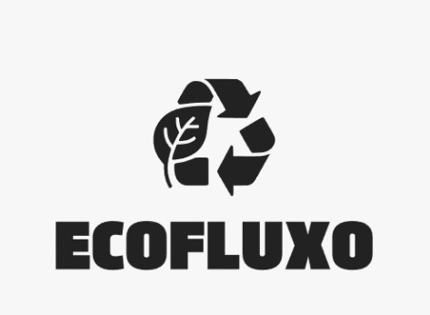

Resultados Esperados
🌍 Redução de resíduos
Diminuição significativa do envio de resíduos orgânicos para aterros sanitários.
🌱 Geração de composto
Produção de adubo orgânico de qualidade para fortalecer a agricultura urbana.
🔄 Economia circular
Fortalecimento da economia circular por meio do reaproveitamento de resíduos.
🤝 Redes colaborativas
Conexão entre escolas, hortas comunitárias e composteiras em rede sustentável.
🎓 Educação ambiental
Promoção de hábitos sustentáveis desde a educação básica.
🏅 Certificação
Incentivo à certificação de escolas como instituições sustentáveis.